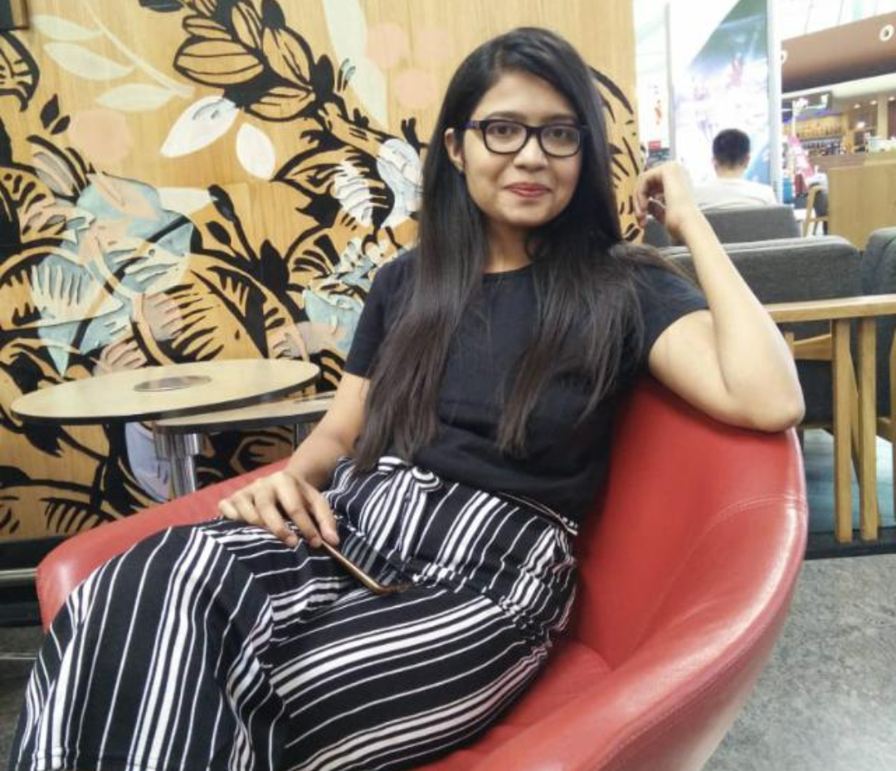

Deeksha G V

Summary
As a software engineer always focused on
delivering the quality work and engaged in
upgrading myself with industry goal by adopting
robust and latest technologies which would
contribute significantly to the growth of
organization.
Education
- University of BDT college of Engineering
Davanagere
06/2016 - 06/2018,
- B.E(ECE)
PESITM Shivamogga
06/2011 - 06/2015,
- Pre-University College
Anmol PU science College Davanagere
05/2009 - 06/2011,
- SSLC
Sri Maruthi high School Davanagere
05/2008 - 05/2009,
Work Experience
- QA Developer
Tata Consultancy services 02/2020 - Present,
- Handling End to End project testing where customer
migration is done from one bank to another.
- Migration involves payments, accounts and cards.
- performing test case design, development and
validation.
Skills
Awards and Certifications
- Core Tech_T5_Extreme Automation Leveraging the
Best of Cloud (09/2021 - Present)
Others
Contact me